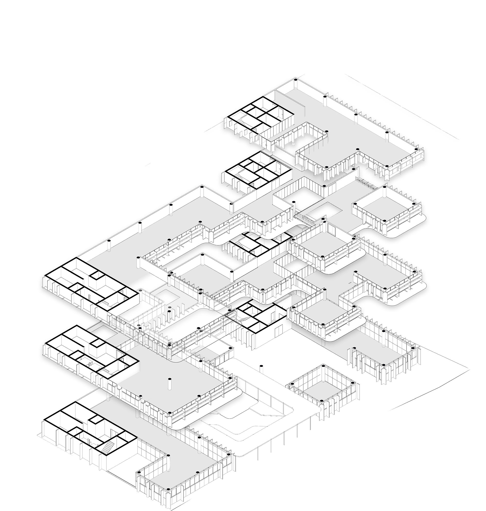

JIHWON CHOI ONECLICK ARCHITECTURE
ARCHITECTURE OC


어떻게 디자인 할 것인가?
2016년 알파고를 시작으로 컴퓨터의 능력에 많은 사람들이 관심을 가지기 시작했다. 컴퓨터로 바둑은 물론 작곡과 회화까지. 단순한 계산을 넘어서 창작의 영역까지 컴퓨터의 활용범위가 넓어졌다. 건축계 에서도 컴퓨터는 활발하게 사용되기 시작했다. 현재 상용화 되어있는 것은 공공데이터를 이용한 모델링 기술과 토지의 법규검토 정도이다. OC 건축사무소는 건축가로서의 컴퓨터의 활용에 대해 탐구한다. 컴퓨터로 건축 디자인이 가능할까? OC는 건축 디자인에서 컴퓨터의 활용에 대해 탐구했다. 컴퓨터를 통한 디자인이 가능할까? 컴퓨터가 디자인한 건물은 어떤 모양일까? 와 같은 질문에서 출발해 건물의 형태, 배치와 내부 프로그램 구성 및 외부 까지 건축 설계의 많은 요소가 컴퓨터에 의해 디자인 되도록 하며 모델링 프로그램 내부의 알고리즘으로 구현했다.
